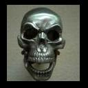

Forums galactiques > Assemblée Galactique : diplomatie officielle > Archives des présentations
Pages : 1 2 ... 11 12 13 ... 63 64
| Soa Respect diplomatique : 45  11/05 ETU 18:28 | Score : 16 Détails Un énorme vaisseau flotta au dessus de l'assemblée, il avait l'air en difficulté, une fumée noir sortait de l'arrière du vaisseau, au bout de quelques minutes il commençait à tomber en piquer, le vaisseau ce crasha sur l'assemblée, une femme sortait du vaisseau détruis.
"Bonsoir, je suis Soa Capitaine de ce vaisseau qui a atterrit sur l'assemblée doucement comme vous l'avez vous ou entendu, je tiens à ne pas payer les réparations, car je n'ai pas d'argents, il a cramer dans le vaisseau, mais acceptez mes excuses les plus profondes, quand à moi je vais tenter de réparer mon vaisseau pour retourner chez moi ou je pourrais retourner dans les bars !" Soa commença à réparer son vaisseau | ||
| Here2kill Respect diplomatique : 18  11/05 ETU 20:09 | Score : 13 Détails *À l'intérieur d'une petite pièce isolée, confortablement assis sur une chaise de première qualité, en-face du plus récent PMC (Portable Micro-Computer), le dirigeant de la planète Asche réfléchissait.
"Qu'est-ce que je peux bien dire? pensa-t-il. Il faut que je me présente à des centaines, peut-être même à des milliers, d'autre commandants. Stanley... je trouve pas que ça sonne comme président planétaire." *Il tapa alors sur le clavier tout neuf de son PMC (cet ordinateur qui a été directement payé avec l'argent des contribuables de Asche) le nom suivant: Here2kill. "Déjà ça me parait plus imposant, dit-il à voix basse." *Il commença alors, via un système holographique, son discours de présentation: "Bonjour à vous tous chers commandants. Tout d'abord, je suis le commandant Stan... euh Here2kill et je suis le dirigeant de la planète Asche. Je souhaite la paix et l'ordre intergalactique (bien que mon pseudonyme exprime le contraire) et je vous garanti user de mon pouvoir à bon essient. Here2kill vous promet un avenir équitable et sans violence mais comme un vieux proverbe le dit si bien: pour la paix, préparer la guerre!" *Il coupa finalement la communication. | ||
| -[Aerÿnn]- Respect diplomatique : 2661  11/05 ETU 20:23  | Score : 17 Détails A la fin de la transmission, une jeune femme s'avança vers l'épicentre de l'Assemblée...
Nul ne la connaissait, nul ne savait d'où elle venait... La seule certitude : elle appartient au genre humain... Arrivée sur l'estrade, elle relèva doucement la tête. Dévoilant ainsi son visage pâle qui balayait rapidement l'Assemblée... Ses yeux fuyaient sans arrêt... Puis, elle prît une grande inspiration... Rougît... Une voix intimidée et chevrotante se fît entendre... "Bon...bonsoir... Honorables... membres de l'Assemblée... Je... je viens en ces lieux me présenter... Je me nomme Aerÿnn... Représentante du peuple Flÿnnaen..." En l'espace d'une seconde, son regard devint vitreux... Comme si elle était déconnectée de la réalité. Puis subitement, son regard prît une grande intensité et s'assombrît. D'une toute autre voix, elle reprît : "Je DETESTE les situations stressantes ! J'ai HORREUR de ça ! CA m'énèèèèrve ! CA me perturbe !" Puis, les mains fébriles, elle farfouilla dans ses poches... Inutilement... En effet, elle n'avait pas de poches sur sa robe... Alors, elle attrapa la bouteille d'eau présente sur le pupitre, la cassa d'un geste brusque et pointa alors le tesson devant l'Assemblée. D'une voix rauque : "NON ! J'ai vraiment HORREUR de ce genre de choses !!!" Et sans laisser quiconque intervenir, Aerÿnn, se taillada le bras gauche et lâcha ensuite l'objet qui se brisa sur le sol. Elle aggripa le pupitre à deux mains tandis que son regard devint de nouveau vitreux... Aerÿnn reprît d'une voix chevrotante et mal assurée : "... Nous sommes un peuple qui ne demande... Que de vivre sereinement... parmi vous... Et..." Une douleur l'arrêta et avec stupéfaction, elle constata sa blessure... Elle releva le bras, d'un air horrifié maintenant et s'écria : "... Mais... Je suis bléssée ! Excusez-moi, je dois... me faire soigner !" En quittant l'estrade, Aerÿnn ne remarqua même pas qu'elle piétinait les bouts de verres étalés sur le sol... | ||
| Homer J. Simpson Respect diplomatique : 14  13/05 ETU 17:51 | Score : 14 Détails Effet spéciaux=ON
Musique de James Bond=ON Élastique=ON Projecteur=ON "La musique de James Bond ce fît entendre dans l'assemblée, et un projecteur montrant un vaisseau avec un... homme prêt à sauter, des gens s'affola, ils croyaient qu'il allait ce suicider, l'homme sauta de l'hélicoptère avec un élastique, au bout de quelques secondes l'élastique craqua et l'homme ce crasha par terre, il ce releva et demanda à pack de bières, la foule le trouvait fou de demander de la bière après être tomber d'une chute pareil, ils déclinèrent et ils appelas du soin" -Et bande de débile je veut des bières ! "l'homme ce releva et étrangla le premier qu'il trouva" -Donner moi des bières ou je vous tuent tous ! "La foule sortirent tous des armes à plasma" -Doh ! Ahhhh "L'homme ce jeta sur la foule armée, ont entendaient que des tirs" -Aïe ça fait mal arrêter ! "Une fois à terre une personne s'approcha et regarda le porte-feuille de l'homme" -Les gars !! Ce type est un échapper de l'asile de Springfield !! Et il s'appelle Homer Simpson ! "BING !! Homer avait assommer le type et reprit son porte-feuille et s'enfuit de l'assemblée pour éviter de ce prendre une balle" | ||
| capt solo Respect diplomatique : 9  13/05 ETU 18:15 | Score : 9 Détails Venue du fin fond de la galaxie un homme s'avance.Personne ne le connait encore.Son nom solo,originaire d'une lointaine galaxie il chercha un endroit où il serait bien acceuillit,jusqu'a trouver apocalypsis où il restera pour un bon moment.Il est:un combatant hors paire,sage, amical qui se fera une joie d'etre votre ami
| ||
| Slarvick Respect diplomatique : 46  13/05 ETU 22:22 | Score : 7 Détails Un commandant de plus s'avanca dans l'assemblée.
Il se présenta sous la forme d'un petit bonhomme vert, race selon la légende appellée Iauda ( les historiens ne sont pas sur de l'ortographe). Il s'avanca vers le micro, ou plutot l'abaissa à lui car il était à la vérité bien petit et commença son discours: "Commandants, commandantes, Permettez moi avant de me présenter en détail, d'excuser mon retard de présentation aux commandants ci-présents Le hasard des circonstances m'a fait échouer sur une planète dont j'ai pris la présidence. C'est sur cette base que je commence à construire mon empire, tant par la voie des armes que par la voie diplomatique où par la voie du tout puissant leem. Un proverbe de mon peuple dit: Pour conquérir utilise la force, si celle-ci échoue use la ruse, enfin, si cette dernière vint aussi à échouer, il reste l'argent. Car si toutes les races et civilisation ont en commun un principe c'est celui de l'argent. Mais un autre proverbe dit:"c'est dans les difficultés que l'on reconnait ses amis" Le commandant ayant affiché et assumé son matérialisme et sa soif de conquête mais aussi son altruisme retourna s'assoir. Il n'était plus qu'un point dans le fourmillment de l'assemblée. | ||
| Capitaine Cossard Respect diplomatique : 9 14/05 ETU 16:07 | Score : 9 Détails Un jeune homme d'une vingtaine d'années, un peu enrobé entrât dans l'assemblée, il affichais un sourire jovial et jetais des regards curieux dans tous les sens. Il attendis que le diplomate à la tribune ai finis de parler, s'approchat de celle-ci et pris la parôle à son tour:
"Bonjour mesdames messieurs commandants et commandantes, commerçants et commerçantes de toute idéologie et de toutes coalitions confondue, je me présente, je suis le Capitaine Cossard Chef des armées et grand chef du conseil de la république impériale de bysantium secundus. Je voudrais m'adresser à vous tous et vous dire que notre gouvernement est pacifiste et souhaite être en meilleur entente possible avec chacun de vous. Nous ne sommes qu'un empire naissant, ainsi chers diplomates, je vous invite à bien vous rappelez ces paroles de paix proférés aujourd'hui en ce lieu. Merci à vous de m'avoir écouté, je vous laisse à des choses surement plus importantes." Toujours en regardant tout autour de lui, il sort de l'assemblée, toujours avec son sourire aux lèvres | ||
| Nute Gunray Respect diplomatique : 32  14/05 ETU 16:17 | Score : 14 Détails
La Fédération du Commerce est apparue environ trois cent cinquante années avant la Première Apocalypse, sous le régime de l’Ambassade D’Espérance. Elle était constituée de marchants itinérants, de négociants et de petites sociétés spécialisées dans le transport de marchandises, c'était donc un petit conglomérat d'entreprises indépendantes mais qui avaient un lien entre elles. Du fait de la situation stable sous le gouvernement d’Ambassade et du peu de guerre qui éclata sous son égide, la Fédération du Commerce pu tranquillement commencer à faire des bénéfices en exportant des marchandises, des technologies mais également des informations. Au départ, la Fédération du Commerce n'était pas seulement dirigée par des Neimoidiens, mais leur fourberie et leur sens des affaires leur permirent d'écarter du pouvoir toutes les autres espèces qui ne bénéficiaient pas, contrairement aux Neimoidiens, de facultés innées pour le commerce et la concurrence. Peu à peu, les postes du Bureau Exécutif, coeur politique de l'organisation, se vidèrent de leurs occupants humains, humanoïdes et extraterrestres pour laisser la place aux Neimoidiens sans scrupules. La Fédération du Commerce fut tout d'abord implantée sur les grands axes commerciaux du gouvernement Ambassade, près des routes hyperspatiales les plus connues et les plus fréquentées. Cette situation permit une rapide expansion vers les mondes du confin de la galaxie et vers les secteurs les moins dynamiques au point de vue économique. Pour pouvoir amener ses produits jusque dans les secteurs les plus éloignés, la Fédération du Commerce se dota d'une gigantesque flotte de cargos, tout d'abord non militarisés. Elle acquit alors les usines Baktoïd, Haor Chall, Sienar Systèmes ou encore les Chantiers Navals Kuat. Leurs cargos étaient énormes car ils devaient amener le plus de marchandises possible dans le plus petit nombre de vaisseaux disponibles pour que la rentabilité soit optimale. Grâce aux prédispositions génétiques des Neimoidiens et à sa flotte, la Fédération du Commerce, petit conglomérat, devint une gigantesque corporation commerciale. Son influence sur le reste de la Galaxie ne cessa de croître, tout comme son prestige et ses bénéfices. Elle s'installa rapidement sur tous les mondes miniers de la Galaxie, concurrença et racheta de force les plus grandes fédérations commerciales comme l'Alliance des Corporations, la Guilde du Commerce, le Techno-Syndicat, ou encore le Clan Bancaire Intergalactique avec qui elle maintient encore de bonnes relations. Elle était devenue si influente qu'elle bénéficiait d'une place pour son représentant à l’Assemblée Galactique. Cette place lui permit de surveiller et de changer les lois commerciales existantes à son profit, instaurant soit une exclusivité de prospection sur une planète, soit empêchant certaines compagnies de traverser des mondes qu'elle occupait. Toutefois, devant la puissance de la Fédération du Commerce, son influence et les bénéfices qu'elle drainait, l’Ambassadeur d’Espérance décida de taxer les routes commerciales aux grandes compagnies qui les empruntaient régulièrement. Répugnant à se battre par eux même et du fait de la fragilité de la croissance de l'espèce Neimoidienne, la Fédération du Commerce se dota d'un grand arsenal de droïdes de combat, de chasseurs droïdes, de cargos militaires contrôlés par un ordinateur avec toutefois, une dizaine de Neimoidiens à son bord pour assurer la gestion des affaires. Elle se construisit peu à peu une flotte uniquement droïde. La maintenance des vaisseaux se faisant par des droïdes, tout comme la sécurité du vaisseau. De plus la peur d'une trahison ou d'espionnage motiva les Neimoidiens à demander une armée totalement automatisée. La puissance militaire de la Fédération du Commerce ne dérangea personne, ni à l’Assemblée, ni dans les autres sphères de pouvoir de la Galaxie. Les autres organisations commerciales disposaient également de machines de guerre tantôt pour assurer la protection d'installations, tantôt pour intimider les concurrents et les dissuader de s'installer sur une planète protégée ; avant qu’elles ne soient elles-mêmes absorbées par la Fédération du Commerce. Les vaisseaux amiraux droïdes, maintenant armés, les droïdes de combat, les droidekas, interdits par l’Assemblée, ne furent pas retirés des forces armées de la Fédération bien qu'une loi ait circulée et empêchait la création d'une armée personnelle. Peu à peu, la Fédération du Commerce commença à mener une politique plus agressive en raisons des diverses lois sur la taxation des routes. Elle décida de créer un blocus autour de la pacifiste planète Orobus pour protester contre cette loi qui risquait de leur faire perdre une somme de crédit, cependant dérisoire par rapport aux bénéfices. Cette situation empira lorsque la Fédération du Commerce, maintenant sous le contrôle de Nute Gunray, envahit la planète. | ||
| kachiko Respect diplomatique : 281  14/05 ETU 18:01 | Score : 9 Détails L'hologramme s'activa péniblement pour recevoir l'hologramme de Ryoko Owari. La transmission était brouillée et mal assurée. Un voile rouge sang se forma petit à petit. Quand il fut net, le décompte de chargement du message s'enclencha et le lecteur semblait avoir du mal à assimiler le format des données.
Une musique, jouée par une harpe, remplit alors le silence. Le voile rouge sang céda la place à une pièce fortement illuminée, cloisonnée par des murs en papier de riz. L'un de ses murs glissa, livrant le passage à une jeune femme brune éblouissante. Elle portait un kimono rouge sang tandis qu'un masque cachait à peine ses magnifiques yeux. Le décolleté laissait entrevoir la naissance de sa poitrine tandis qu'elle se mettait à genoux devant le transmetteur. Un pan de son kimono glissa montrant une cuisse fine mais ferme. La jeune femme s'inclina devant le transmetteur puis commença à parler. "Commandants, Commandantes, Grands de cette Galaxie, Je suis Dame Kachiko de la Famille Bayushi, je règne sans partage sur le Clan du Scorpion, ma Nation. La Déesse Soleil, Dame Amaterasu, a bien voulu bénir mon Clan en lui donnant la Vie, en la faisant évoluer et maintenant en nous permettant de prendre place parmi les Grandes Nations de cet univers. Je viens donc présenter mes respects aux autres Empires de cette Galaxie. Sachez que sous peu, nos Navires de Commerce silloneront l'espace et, j'espère, feront, pacifiquement, leur devoir de Marchands. Que la Joie de l'Illumination nous guide tous vers les sommets de la compréhension." | ||
| Juliette de Valcoeur Respect diplomatique : 32  14/05 ETU 18:20 | Score : 5 Détails J'ai parlé mais ne me suis pas présentée.
Je me nomme Juliette De Valcoeur, dernière descendante des Valcoeur mais qui garde son rang de noblesse éternellement. Elle est digne et réfléchie et ne cherche qu'à faire quelque chose de bien dans la galaxie Espérance. Je combats la tyranie et ce sera l'objectif de ma vie. | ||
| khalim Respect diplomatique : 488  14/05 ETU 18:27 | Score : 3 Détails Bienvenue aux (nombreux) nouveaux, avec tout ce superbe sang neuf, la galaxie Espérance est sur le bon chemin!
| ||
| Hotfoot Respect diplomatique : 267  14/05 ETU 19:31 | Score : 7 Détails Hotfoot, Fils ainé de Lord Bloodscape.
Un garçon timide et réservé. Il grandit dans la douce quiétude du Château de Half Craft dans l'ancienne Angleterre, sa jeune fut dorée. Il apprit toutes les règles du parfait gentleman et surtout celle de ne parler que quand il a quelque chose à dire ... Ce qui n'arrivait quasiment jamais d'ailleurs. Il était profondément silencieux. Au grand désespoir de ses parents. Un soir qu'il récitait sa prière habituelle, il fut témoin d'un événement sans précédent. La forêt qui faisait face au domaine de son père brûlait entièrement ... sans se consumer. Silencieux mais curieux de nature, il s'y rendit et fut frappé par la foudre. Il sentit son corps se dissoudre sous l'effet torride de la chaleur. Puis, il se laissa abandonner à la douleur et sombra dans l'inconscience. A son réveil, plusieurs secondes ou plusieurs jours plus tard, il ne saurait dire, il sentit un phénomène étrange de ... picotement. Il regarda ses "mains" elles brûlaient littéralement. Quelle ironie: lui, si discret, venait de se transformer en torche vivante. La malédiction fut terrible: il vit tous ces proches partir les uns après les autres et quitta définitement l'ancienne Angleterre lorsque vint l'aube du voyage spatial. De détours en voies hyperspatiales, il se retrouve aujourd'hui en Espérance. | ||
| Kerio Respect diplomatique : 28  15/05 ETU 23:52 | Score : 4 Détails Un carnage se déroulait dans les plaines de Sirkka, le combat était rude, des crânes volaient, le sang s'écoulait a flots, et de nombreux hommes tombeaient. Soudain, sur le champ de bataille, des femmes resplendissantes de beauté,les Valkyries, descendirent des cieux, s'approchant des guerriers, afin de les recueillirs pour les conduire au Valhalla, le palais d'Odin, là où les plus grands guerriers s'y livrent chaque jour, pendant l'éternité, de terribles combats après lesquels ils reviennent sains et saufs pour boire dans un crâne l'hydromel et la bière qui leur sont versés par les Valkyries.
L'une d'elle s'approcha d'un jeune guerrier fort et robuste décédé auparavant par une pluie de fléche, le réveilla des morts et lui promis la résurection. Désigné par Odin, celui-ci devra gouverné sur un Empire donné durant l'éternité. " A partir d'aujourd'hui, tu t'appelera Kerio". | ||
| Zaphod Beeblebrox Respect diplomatique : 5 16/05 ETU 21:05 | Score : 5 Détails Un jeune général surgit du néant approche il veut se faire une place dans cette galaxie, quitte à devoir éliminer ceux qui ne veulent pas de son amitié. Il n’est pas hostile par nature mais il est près à réagir avec efficacité si on l’attaque et à balayer toute trace des imbéciles à avoir osés le provoquer. Mais pour l’instant tous ce que veux Zaphod Beeblebrox c’est nouer des contacts solides, amicaux et réguliers avec les autre dirigeants.
| ||
| -[Aerÿnn]- Respect diplomatique : 2661 17/05 ETU 22:35 | Score : 0 Détails HRP : Petit up !
Ne pas voter ce message merci. | ||
| fritounes Respect diplomatique : 73  18/05 ETU 21:42 | Score : 8 Détails fritounes
Ex druide de l'ancien monde, banni par son ordre, fut condanée à la téléportation. En effet a cette époque, les druides ayant commi des faute grave étaient téléporté. personne ne savait où ils attérrissaient... Ce fut mon cas. aprés un voyage spacial et temporel, je me suis retrouvé dans cette galaxie ou la vie est omniprésente. cependant ce nouvel univers me surprend et m'éffraie,ici les habitants n'ont plus aucune considération pour la nature et ils ne s'occupent plus que de leurs affaires; allant même jusqu'a oublier leurs origines. Mon adaptation sera longue et difficile mais j'y consacrerai mon temps et mes efforts, en dehors, bien sur, de mes heures de méditations... | ||
| Gemnoth-Sinn Respect diplomatique : 358  19/05 ETU 08:50 | Score : 0 Détails Bienvenue dans cette galaxie, druide, puissiez-vous pratiquer votre culte en toute liberté.
Si vous voulez vous détendre entre deux incantations, n'hésitez pas a passer a la taverne! | ||
| Cthulhu Respect diplomatique : 40  20/05 ETU 13:10 | Score : 11 Détails Alors que l'Assemblée bruissait à l'accoutumée, un Commandant, vêtu d'une longue cape noire frappée du sceau étrange du Kraken, entra dans la vaste enceinte qui avait vu tant et tant de discours être prononcés. Il gagna sa place d'une démarche assurée et fit signe au greffier qu'il souhaitait prendre la parole. Lorsque l'orateur qui était à la tribune eut fini son propos, il s'avança :
" Commandantes, Commandants, Tout d'abord, je tiens à m'excuser de venir ainsi troubler vos débats mais laissez-moi me présenter. Je suis l'Ambassadeur du Commandant Cthulhu, descendant du dernier représentant de la dynastie terminienne, le grand Cthuhlu. Celui-ci, né sur la planète Bételgeuse dans une Galaxie reculée, en fut chassé par sa défaite contre les troupes maléfiques et dut, après des années d'errance dans l'espace dans son caisson de survie, se réfugier dans une cité subaquatique perdue au fond des océans d'une lointaine planète. Il réussit à investir le palais du roi régnant alors sur celle-ci et rebaptisa la planète R'Lyeh. Grand chef militaire, il mena ses troupes à la victoire et parvint à reconquérir les territoires en sa possession avant sa cruelle défaite et même les domaines dont ses ancêtres avaient été les maîtres mais qu'ils avaient perdus. Ce fut alors l'âge d'or de la Confédération de la Nouvelle Fondation. Il envoya de nombreuses expéditions aux frontières de l'Univers connu afin d'étendre sa domination. L'une de ces expéditions, commandée par le plus jeune de ses fils, découvrit une mystérieuse planète, inscrite sur les cartes galactiques comme étant la planète LV-426 (la 426ème planète dont les coordonnées ont été calculées par Le Verrier). Après plusieurs années de prospection minière, des commerçants de passage apprirent aux membres de l'équipage qu'une terrible catastrophe avait balayé la brillante civilisation terminienne : des magnifiques palais que le grand Cthuhlu avait bâtis ne restaient que des ruines ; sur les terres jadis fertiles s'étendait la désolation. Ils décidèrent donc de faire de leur Commandant, dernier survivant des dynastes terminiens, leur roi, et d'envoyer un Ambassadeur à l'Assemblée qui régissait les rapports entre les différents membres de la Galaxie. C'est moi qu'ils ont choisi pour vous faire part de l'existence de ce jeune Etat. Je vous remercie de m'avoir écouté." | ||
| Piêmni Respect diplomatique : 12  20/05 ETU 21:12 | Score : 10 Détails Un homme assez grand, entre deux âges, enveloppé d'une robe ample, accompagné d'un autre homme en uniforme rouge frappé d'un écusson représentant un écureuil, se rendit au bureau de recensement des Commandant et prit la parole devant l'assemblée présente :
« Camarades ! Je viens ici accomplir ce qui me semble être mon devoir : informer le reste d'Espérance de l'émergence d'un nouvel État. Je m'appelle Piêmni Zbrulasp Šaijakalopiettokal et suis le Consul de la République friitastrienne, et par ailleurs représentant de l'Alliance ; il y a peu, nous avons reçu un message du Gouvernement galactique nous apprenant le rétablissement de l'ordre un peu partout après le terrible ouragan magnétique. Ce dernier avait, sur Friitastré, causé d'immenses dégâts ; d'après les échos que nous avons reçu, il semble qu'il se soit passé la même chose dans tout l'Univers. Le chaos résultant de cet ouragan fut catastrophique tant d'un point de vue humain, que matériel ou écologique : incendies volontaires ou non, pandémies, déchets toxiques relachés, etc. C'est au cours de cette période que fut fondé le Parti communiste universaliste - Ière Universalité, dont je devins rapidement le Secrétaire général, assisté d'Argirë Odisajus Skopé et de Petro Ëanopilip Zalci. Nous lutâmes pour la restauration de la République sur Friitastré, qui s'appelait encore Cijaskpri, et grâce à notre détermination et, il faut l'avouer, à la violence, nous parvînmes à notre objectif. N'allez pas imaginer qu'après avoir recréé la République, nous avons pris le pouvoir pour créer une oligarchie ; des élections libres furent organisées et nous ne les avons remportées que d'une courte majorité. Une fois au pouvoir, nous œuvrâmes pour ce qui nous semblait juste et tentâmes de continuer à ramener l'ordre ; jusqu'à ce jour qui restera dans nos mémoires comme une date de fête où nous avons reçu une réponse à notre appel à l'aide en direction d'un hypothétique gouvernement galactique. Je pense avoir fini de dire l'essentiel de ce qui me concerne et concerne la République friitastrienne. Sur ce, salut Camarades ! » Puis l'homme repartit, toujours accompagné de son garde du corps. | ||
| Sombrecoeur Respect diplomatique : 387  25/05 ETU 14:54 | Score : 0 Détails Sincére salutation à tout les nouveaux commandants, a qui je souhaite, en passant, une agréable et prospére vie dans notre bien aimé éspérence.
HRP.J'écris pour remettre les archive en 1er page, histoire que les jeunes comandants n'écrivent pas un sujet rien que pour leur presentation. Merci de ne pas voter.HRP |
Pages : 1 2 ... 11 12 13 ... 63 64
Forums galactiques > Assemblée Galactique : diplomatie officielle > Archives des présentations